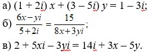

Варианты самостоятельных и контрольных работ
Вариант 1.
Вариант 2.
Вариант 3.
Вариант 4.
Вариант 5.
1. Произведите действия с комплексными числами в алгебраической форме
2. Решите уравнения относительно действительных переменных х и у:

3. Вычислите следующие квадратные корни:
4. Найдите все комплексные числа, каждое из которых сопряжено с самим собой.
Вариант 6.
1. Решите квадратные уравнения:
2. Найдите значения следующих многочленов
3. Вычислите следующие корни:
4. Как связаны между собой два комплексных числа, сумма и произведение которых являются действительными числами?
Вариант 7.
Вариант 8.
Вариант 9.
1. Какое множество точек комплексной плоскости (z = x + yi) задается условием:
а) x > 0;
б) y ≤ 0;
в) -1 ≤ argz < π.
2. Пусть z1 и z2 ∈ C. Докажите, что на комплексной плоскости точки, изображающие числа 0, z1, z2, z1 + z2, являются четырьмя вершинами параллелограмма, причем z1 и z2 противоположные вершины
3. Опредделите, какое множество точек комплексной плоскости задается условием:
а) | z | = 2;
б) | z | ≤ 2;
в) | z | < 2.
Вариант 10.
1. Найдите число, имеющее наименьший положительный аргумент, среди комплексных чисел, удовлетворяющих условию:
а) | z - 25i | ≤ 15;
б) | z - 5i | ≤ 4.
2. Докажите, что для z1, z2 ∈ C следующие высказывания эквивалентны:
а) | z1 + z2 | = | z1 | + | z2|
б) | z1| · z2 = z1 · | z2 |.
3. В окружность с центром в начале координат вписан правильный треугольник. Покажите, что комплексные числа, соответствующие его вершинам, образуют геометрическую прогрессию.